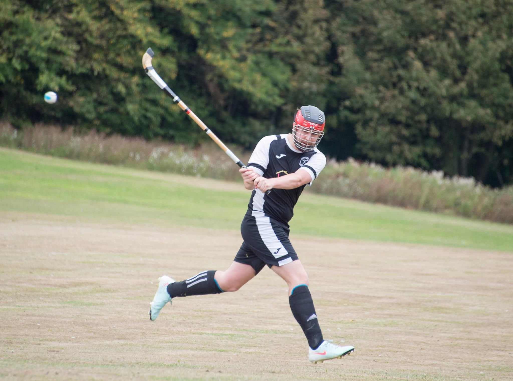

About
Me
Programmer, Shinty Player, Avid Gamer
Hi, I'm Thomas, A 22 year old Student, currenly awaiting graduation, I studied Computer Games Technology at Abertay and I'm set to achieve a 2.1. In my spare time, I enjoy taking part in game jams with a group of people and playing a large selection of games from Darksouls to Rocket League.

One of my biggest hobbies is playing shinty. Shinty is a scottish team based sport using sticks, it's often compared to field hockey or the irish Hurling. Over my time at university I have been playing weekly with a league side-Aberdour 1sts having previously played since 4 for my home side up north. During university I took resposibility for creating the university of dundee shinty club after it dissolved during covid. I've had the privlidge of captaining both the uni team and aberdour 2nd team in 2024/25